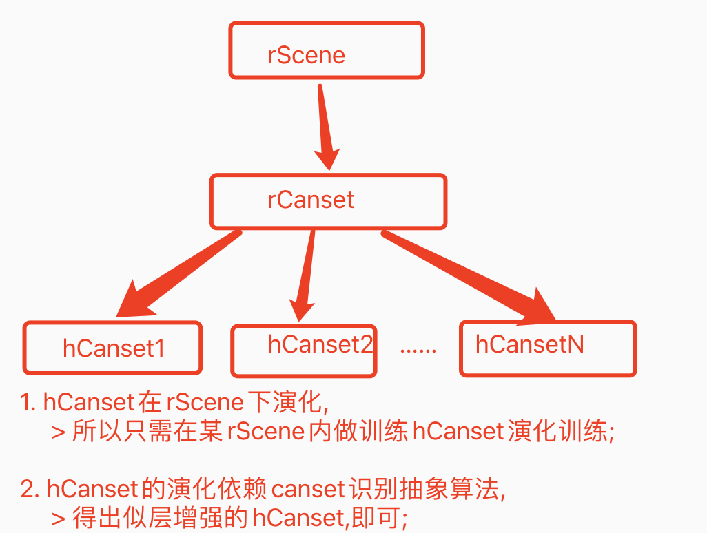
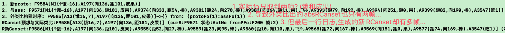

AI系列之《2023.09-11：去皮学成与搬运任务展开》

来源：HELIX_THEORY/手稿/assets/709_hCanset演化分析.png

来源：HELIX_THEORY/手稿/assets/710_测得预想与实际类比absCanset过度抽象问题.png
来源：Note30.md、Note31.md
9 到 11 月继续推进去皮训练：整理 Canset 演化流程，将 cansetAlg 反馈改为有共同抽象即匹配，并梳理 Canset 预想与实际类比流程。到 11 月，系统开始规划搬运训练，并尝试学会搬运带皮果。
这一阶段的重点，是把动作链从“被训练出来”推进到“能解释其演化”。Canset 的预想与实际对比，是智能行动中非常关键的一环：系统预期自己会怎么做，实际又发生了什么，二者差异如何反馈到后续方案。
搬运任务的引入，说明任务对象从静态目标变成可被移动、可被中介利用的对象。它为后续“搬运、去皮、飞至、吃掉”的长链条任务打基础。